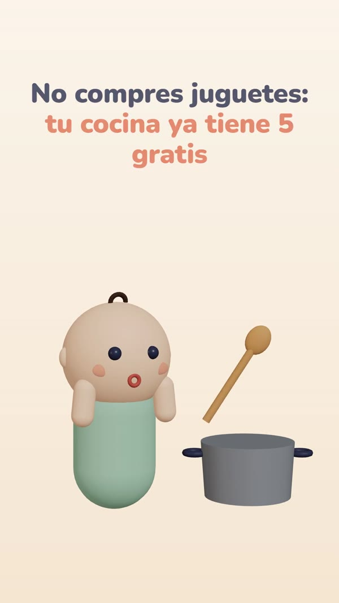

Juegos para bebés gratis y caseros de 0 a 3 años
30 juegos con cosas que ya tienes en casa (una olla, un táper, un paño de cocina), ordenados por edad. Cada uno explica qué desarrolla, cómo se juega y qué tener en cuenta para que sea seguro. Con fuentes de pediatría (AAP y CDC).
Descargar la guía gratis (PDF)
Sin registro. Sin correo. Sin publicidad.

Elige la edad de tu bebé
Por qué juegos caseros
Para aprender, un bebé no necesita juguetes caros ni pantallas: necesita a alguien que juegue con él y objetos que pueda tocar, golpear, esconder y apilar. La Academia Americana de Pediatría lo resume así: los juguetes más sencillos son los que más estimulan la imaginación, el lenguaje y el juego compartido.
Los 30 juegos en un PDF
Todas las edades de 0 a 3 años en una guía para imprimir o guardar en el móvil. Gratis y sin registro.
Descargar la guía gratisPreguntas frecuentes
¿Necesito comprar juguetes para estimular a mi bebé?
No. La Academia Americana de Pediatría (AAP) recuerda que los juguetes sencillos y tradicionales, y sobre todo jugar contigo, son lo que más ayuda al desarrollo. Una olla, un táper o un paño de cocina valen.
¿Cuánto tiempo tengo que jugar con mi bebé?
Ratos cortos varias veces al día, cuando esté despierto y tranquilo. Si se cansa, llora o mira hacia otro lado, para y prueba más tarde. Lo importante es la constancia, no la duración.
¿Qué hago si mi bebé todavía no hace algo de su edad?
Cada bebé tiene su ritmo y las edades son orientativas. Si algo te preocupa, consulta a tu pediatra: es quien puede valorarlo.
¿La guía es gratis de verdad?
Sí. Es un PDF que se descarga sin registro ni correo electrónico.
Un juego nuevo cada día
Publicamos un vídeo corto con un juego nuevo cada día en Instagram: @lamejorcrianza.